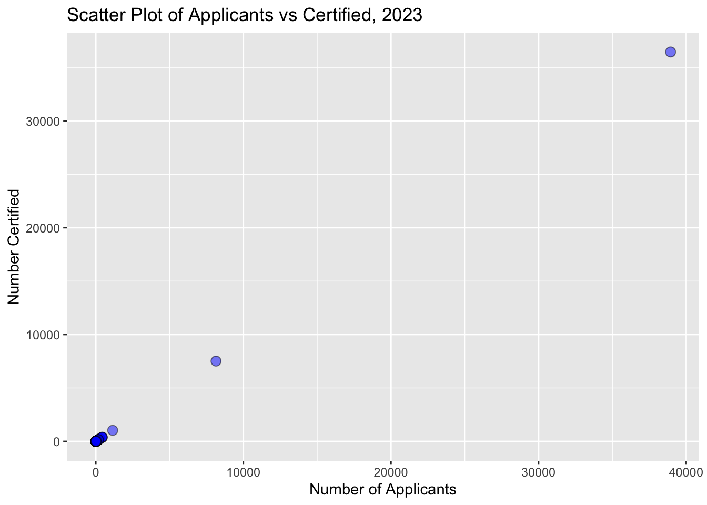
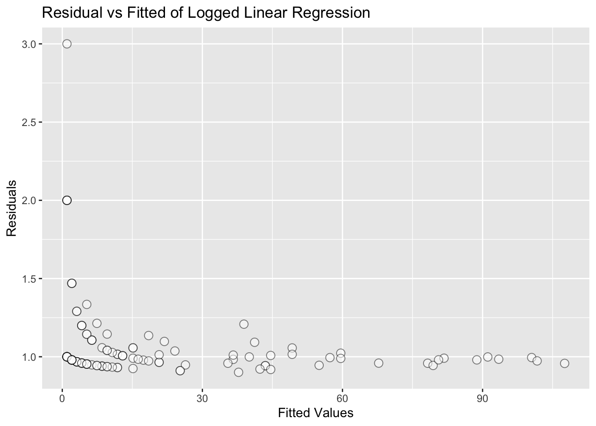
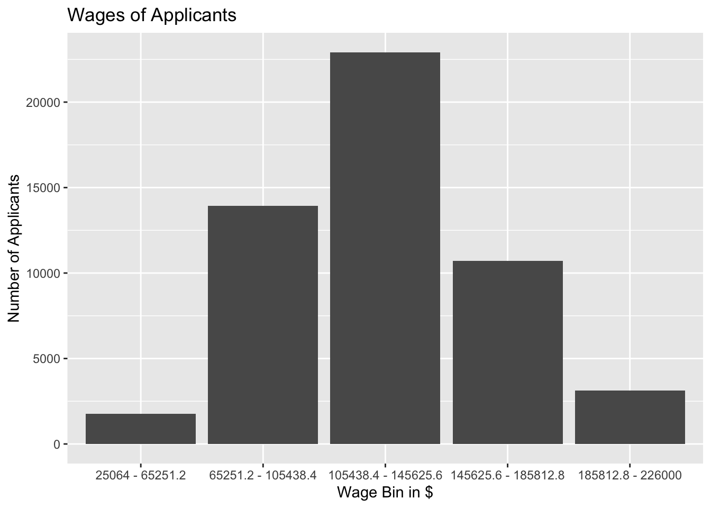
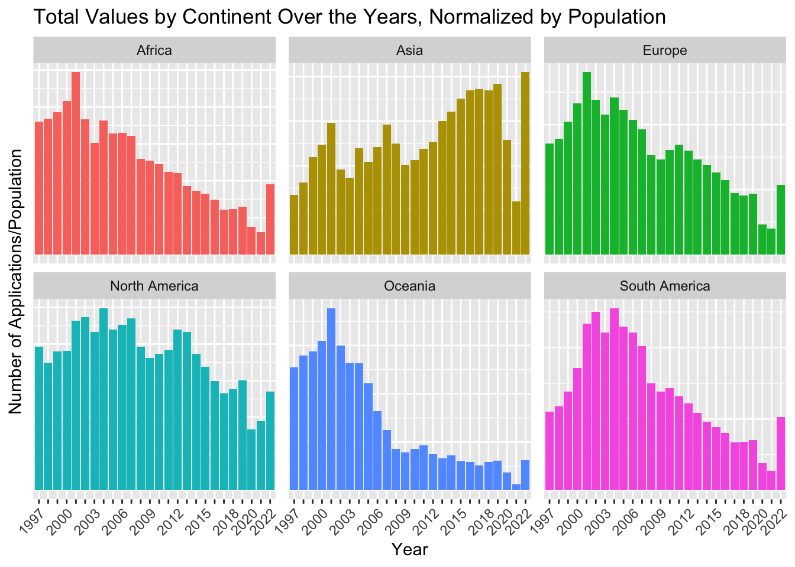
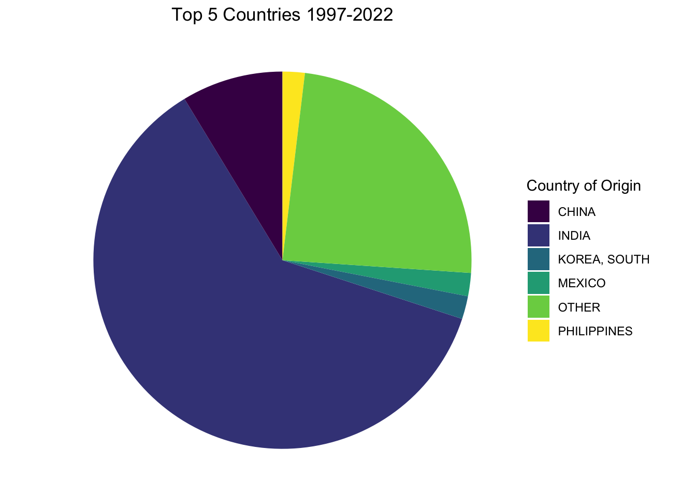

We can see that they are almost perfectly correlatied, so linear regression should be good. However,
ggplot(prop_certified, aes(x = num_applicants, y = num_certified)) +geom_point(shape =21, fill ="blue", color ="black", size =3, alpha =0.5) +labs(x ="Number of Applicants", y ="Number Certified", title ="Scatter Plot of Applicants vs Certified, 2023")

This plot shows a very large gap that would greatly influence the result of any linear regression model. So, we can remove the outliers and build regression model without them.
#Trying again with outliers removedprop_certified_filtered$num_applicants_log <-log(prop_certified_filtered$num_applicants)prop_certified_filtered$num_certified_log <-log(prop_certified_filtered$num_certified)linear_model_filtered <-lm(num_applicants_log ~ num_certified_log -1, data = prop_certified_filtered)summary(linear_model_filtered)
Call:
lm(formula = num_applicants_log ~ num_certified_log - 1, data = prop_certified_filtered)
Residuals:
Min 1Q Median 3Q Max
-0.10468 -0.04115 -0.01632 0.02923 1.09861
Coefficients:
Estimate Std. Error t value Pr(>|t|)
num_certified_log 1.029686 0.006885 149.6 <2e-16 ***
---
Signif. codes: 0 '***' 0.001 '**' 0.01 '*' 0.05 '.' 0.1 ' ' 1
Residual standard error: 0.1901 on 131 degrees of freedom
Multiple R-squared: 0.9942, Adjusted R-squared: 0.9941
F-statistic: 2.237e+04 on 1 and 131 DF, p-value: < 2.2e-16
We get a crazy low p-value, which should be good but actually just shows that these variables basically hold the same information, so the regression model is redundant.
#plotting resid vs fitted, need to transform back from logpredicted_log <-predict(linear_model_filtered)predicted <-exp(predicted_log)augmented_data <-augment(linear_model_filtered, newdata =data.frame(num_certified_log = prop_certified_filtered$num_certified_log, num_applicants_log = prop_certified_filtered$num_applicants_log))augmented_data$exp_fitted <-exp(augmented_data$.fitted)augmented_data$exp_resid <-exp(augmented_data$.resid)ggplot(augmented_data, aes(x = exp_fitted, y = exp_resid)) +geom_point(shape =21, fill ="transparent", color ="black", size =3, alpha =0.5) +labs(x ="Fitted Values", y ="Residuals", title ="Residual vs Fitted of Logged Linear Regression")

Also, even with the outliers removed, the residual values do not fit exactly as we want. This is not an optimal example of linear regression. Try something else:
#Try linear regression for wage_offered
#Start by removing outlierssum(is.na(fy19_relevant$WAGE_OFFERED_FROM_9089))
#Want to see if there’s more applicants for higher paying jobs
# Define the number of bins and create bins for the 'WAGE_OFFERED_FROM_9089' variablenum_bins <-5# You can adjust the number of bins as neededfy23_wage <- fy23_wage %>%mutate(WAGE_BIN =cut(WAGE_OFFER_FROM, breaks = num_bins, labels =FALSE))# Group by the bins and count the number of applicants for each binapplicant_counts <- fy23_wage |>group_by(WAGE_BIN) |>mutate(num_applicants =n())
# Retrieve the bin valuesbin_values <-seq(min(fy23_wage$WAGE_OFFER_FROM), max(fy23_wage$WAGE_OFFER_FROM), length.out = num_bins +1)bin_intervals <-paste0(bin_values[-length(bin_values)], " - ", bin_values[-1])ggplot(fy23_wage, aes(x =factor(WAGE_BIN, labels = bin_intervals))) +geom_bar() +labs(x ="Wage Bin in $", y ="Number of Applicants", title ="Wages of Applicants")

We can try to predict the wages for employees in the upcoming period.
`summarise()` has grouped output by 'COUNTRY_OF_CITIZENSHIP'. You can override
using the `.groups` argument.
merged_data <-left_join(top5_applicants, top5_certified, by =c("COUNTRY_OF_CITIZENSHIP", "year_month"))ggplot(merged_data, aes(y = total_applicants, x =yearmonth(year_month), color = COUNTRY_OF_CITIZENSHIP)) +geom_line() +geom_line(aes(y = certified_applicants), linetype ="dotted") +labs(x ="Decision Date", y ="Number of Applicants", title ="Number of Applicants by Country for Top 5 Countries")
`summarise()` has grouped output by 'COUNTRY_OF_CITIZENSHIP'. You can override
using the `.groups` argument.
ggplot(top5_wage, aes(y = avg_wage, x =yearmonth(year_month), color = COUNTRY_OF_CITIZENSHIP)) +geom_line() +facet_wrap(~COUNTRY_OF_CITIZENSHIP)+labs(x ="Decision Date", y ="Average Wage", title ="Average Wage by Country for Top 5 Countries")+theme(axis.text.x =element_text(angle =45, hjust =1))
top5_wage <- combined_19_23 |>filter(CASE_STATUS %in%c("Certified", "Certified-Expired")) |>group_by(year_month) |>summarise(avg_wage =mean(WAGE_OFFER_FROM, na.rm =TRUE)) |>filter(!is.na(avg_wage))ggplot(top5_wage, aes(y = avg_wage, x =yearmonth(year_month))) +geom_line() +labs(x ="Decision Date", y ="Average Wage", title ="Average Wage")
`summarise()` has grouped output by 'year_month'. You can override using the
`.groups` argument.
ggplot(certified_counts, aes(y = certified_count/total_count, x =yearmonth(year_month))) +geom_line() +facet_wrap(~COUNTRY_OF_CITIZENSHIP)+labs(x ="Decision Date", y ="Certified/Total", title ="Acceptance Rate for the top 5 Countries")+theme(axis.text.x =element_text(angle =45, hjust =1))
#Now, look at correlation between education level and wage
combined_19_23_accepted <- combined_19_23 |>filter(CASE_STATUS %in%c("Certified", "Certified-Expired"))#scatter plot: x = time, y = wage, color = education levelggplot(combined_19_23_accepted, aes(x =yearmonth(year_month), y =log(WAGE_OFFER_FROM), color = FOREIGN_WORKER_EDUCATION)) +geom_point(alpha =0.5) +labs(x ="Year Month", y ="Wage", color ="Education Level",title ="Scatter Plot of Wage vs Year Month")
`summarise()` has grouped output by 'FOREIGN_WORKER_EDUCATION'. You can
override using the `.groups` argument.
ggplot(education, aes(y = total_count, x =yearmonth(year_month), color = FOREIGN_WORKER_EDUCATION)) +geom_line() +labs(x ="Decision Date", y ="Applied", title ="Applicants and Education Levels")
ggplot(education, aes(y = certified_count/total_count, x =yearmonth(year_month))) +geom_line() +facet_wrap(~FOREIGN_WORKER_EDUCATION) +labs(x ="Decision Date", y ="Accepted", title ="Accptance Rate and Education Levels")+theme(axis.text.x =element_text(angle =45, hjust =1))
#Goals: -see if we can do linear regression once things are normalized by population
Warning: There was 1 warning in `mutate()`.
ℹ In argument: `Population = as.numeric(gsub(",", "", `Total Population`))`.
Caused by warning:
! NAs introduced by coercion
Warning: There was 1 warning in `summarize()`.
ℹ In argument: `across(everything(), sum, na.rm = TRUE)`.
ℹ In group 1: `Continent = "Africa"` and `Year = "1997"`.
Caused by warning:
! The `...` argument of `across()` is deprecated as of dplyr 1.1.0.
Supply arguments directly to `.fns` through an anonymous function instead.
# Previously
across(a:b, mean, na.rm = TRUE)
# Now
across(a:b, \(x) mean(x, na.rm = TRUE))
`summarise()` has grouped output by 'Continent'. You can override using the
`.groups` argument.
ggplot(merge_continent, aes(x = Year, y = count_h1b, fill = Continent)) +geom_bar(stat ="identity", position ="stack") +facet_wrap(~Continent, scales='free_y') +labs(title ="Total Values by Continent Over the Years",x ="Year", y ="Number of Applications") +theme(legend.position ="none",axis.text.x =element_text(angle =45, hjust =1)) +scale_x_discrete(guide=guide_axis(check.overlap=TRUE))
ggplot(merge_continent, aes(x = Year, y = count_h1b/Population, fill = Continent)) +geom_bar(stat ="identity", position ="stack") +facet_wrap(~Continent, scales='free_y') +labs(title ="Total Values by Continent Over the Years, Normalized by Population",x ="Year", y ="Number of Applications/Population") +theme(legend.position ="none",axis.text.x =element_text(angle =45, hjust =1))+scale_x_discrete(guide=guide_axis(check.overlap=TRUE))+theme(axis.text.y =element_blank(), axis.ticks.y =element_blank())

mergetry$Year <-as.factor(mergetry$Year)world_map <-map_data("world")world_map$Country_Standardized <-standardize_country_names(world_map$region)# Merge world map data with h1b datah1b_data_2022 <-subset(mergetry, year ==2022)map_data <-inner_join(world_map, h1b_data_2022, by ="Country_Standardized")map_data <- map_data[order(map_data$order), ]map_data <-subset(map_data, year ==2022)p <-ggplot() +geom_map(data = map_data, map = map_data,aes(map_id = region, fill =log(count_h1b)/log(Population))) +expand_limits(x =c(min(map_data$long), max(map_data$long)), y =c(min(map_data$lat), max(map_data$lat)))+coord_fixed(ratio=1.2) +theme_void() +#scale_fill_continuous(name = "H1B Count") + scale_fill_viridis_c()+labs(title ="H1B Visa Distribution by Country, 2022")+theme(plot.title =element_text(hjust =0.5))print(p)
#summarise the restother_countries <- mergetry |>anti_join(top_countries, by ="Country_Standardized") |>filter(!is.na(count_h1b))|>summarise(Country_Standardized ="Other",total_count =sum(count_h1b))combined_data <-bind_rows(top_countries, other_countries)# pie_chart <- pie(combined_data$total_count, labels = upper(combined_data$Country_Standardized), main = # paste("Top 5 Countries in 2022"), col=viridis(length(combined_data$total_count)))ggplot(combined_data, aes(x ="", y = total_count, fill =toupper(Country_Standardized))) +geom_bar(width =1, stat ="identity") +coord_polar("y", start =0) +theme_void() +theme(legend.position ="right") +scale_fill_viridis_d(name ='Country of Origin') +labs(title =paste("Top 5 Countries 1997-2022")) +theme(plot.title =element_text(hjust =0.5))

#calculating percentage of applicants from India in 2022h1b_data_2022 <- h1b_data_2022[!is.na(h1b_data_2022$count_h1b), ]total_sum <-sum(h1b_data_2022$count_h1b)india_sum <-sum(h1b_data_2022$count_h1b[h1b_data_2022$Country_Standardized =="india"])percentage_from_india <- (india_sum / total_sum) *100print(percentage_from_india)
[1] 81.45388
#calculating percentage of applicants from india 1997-2022mergetry_nonan <- mergetry_pop_country[!is.na(mergetry_pop_country$count_h1b), ]total_sum <-sum(mergetry_nonan$count_h1b)india_sum <-sum(mergetry_nonan$count_h1b[mergetry_nonan$Country_Standardized =="india"])percentage_from_india <- (india_sum / total_sum) *100print(percentage_from_india)
[1] 61.29237
#calculating percentage of applicants from china 1997-2022total_sum <-sum(mergetry_nonan$count_h1b)china_sum <-sum(mergetry_nonan$count_h1b[mergetry_nonan$Country_Standardized =="china"])percentage_from_china <- (china_sum / total_sum) *100print(percentage_from_china)
[1] 8.671413
#Calculating percentage of world population from chinamergetry_nonan <- mergetry[!is.na(mergetry$Population), ]mergetry_nonan <- mergetry_nonan[!is.na(mergetry_nonan$Country_Standardized), ]total_sum <-sum(mergetry_nonan$Population)china_sum <-sum(mergetry_nonan$Population[mergetry_nonan$Country_Standardized =="china"])percentage_from_china <- (china_sum / total_sum) *100print(percentage_from_china)
[1] 19.27712
#Calculating percentage of h1-b applicants from Asiamergetry_nonan <- mergetry[!is.na(mergetry$count_h1b), ]total_sum <-sum(mergetry_nonan$count_h1b)asia_sum <-sum(mergetry_nonan$count_h1b[mergetry_nonan$Continent =="Asia"])percentage_from_asia <- (asia_sum / total_sum) *100print(percentage_from_asia)
[1] 80.40328
#Calculating percentage of world population from Indiamergetry_nonan <- mergetry[!is.na(mergetry$Population), ]mergetry_nonan <- mergetry_nonan[!is.na(mergetry_nonan$Country_Standardized), ]total_sum <-sum(mergetry_nonan$Population)india_sum <-sum(mergetry_nonan$Population[mergetry_nonan$Country_Standardized =="india"])percentage_from_india <- (india_sum / total_sum) *100print(percentage_from_india)
[1] 17.47209
#calculating percentage of world population from Asiamergetry_nonan <- mergetry[!is.na(mergetry$Population), ]mergetry_nonan <- mergetry_nonan[!is.na(mergetry_nonan$Continent), ]total_sum <-sum(mergetry_nonan$Population)asia_sum <-sum(mergetry_nonan$Population[mergetry_nonan$Continent =="Asia"])percentage_from_asia <- (asia_sum / total_sum) *100print(percentage_from_asia)
[1] 62.05651
#Group combined data by year and country of citizenship
`summarise()` has grouped output by 'year'. You can override using the
`.groups` argument.
#make sure both datasets have lower case values for country before mergingcombined_19_23_pop <- combined_19_23_pop |>mutate(COUNTRY_OF_CITIZENSHIP =toupper(COUNTRY_OF_CITIZENSHIP))population_data <- population_data |>mutate(Name =toupper(Name)) |>mutate(year =as.numeric(year))mergetry <-left_join(population_data, combined_19_23_pop, by =c("year"="year", "Name"="COUNTRY_OF_CITIZENSHIP"))mergetry$`Total Population`<-as.numeric(gsub(",", "", mergetry$`Total Population`))
Warning: NAs introduced by coercion
mergetry_2023 <- mergetry |>filter(Year ==2023)
ggplot(mergetry_2023, aes(x = num_applicants/`Total Population`, y = num_certified/`Total Population`)) +geom_point(shape =21, fill ="blue", color ="black", size =3, alpha =0.5) +labs(x ="Number of Applicants", y ="Number Certified", title ="Scatter Plot of Applicants vs Certified 2023, normalized by population")
Warning: Removed 88 rows containing missing values or values outside the scale range
(`geom_point()`).
linear_model_pop <-lm(num_applicants/`Total Population`~ num_certified/`Total Population`-1, data = mergetry_2023)summary(linear_model_pop)
Call:
lm(formula = num_applicants/`Total Population` ~ num_certified/`Total Population` -
1, data = mergetry_2023)
Residuals:
Min 1Q Median 3Q Max
-7.422e-06 1.100e-08 4.090e-07 1.376e-06 6.685e-05
Coefficients:
Estimate Std. Error t value Pr(>|t|)
num_certified 3.111e-08 6.822e-09 4.560 1.12e-05 ***
num_certified:`Total Population` -2.168e-17 4.877e-18 -4.446 1.80e-05 ***
---
Signif. codes: 0 '***' 0.001 '**' 0.01 '*' 0.05 '.' 0.1 ' ' 1
Residual standard error: 8.958e-06 on 137 degrees of freedom
(88 observations deleted due to missingness)
Multiple R-squared: 0.184, Adjusted R-squared: 0.1721
F-statistic: 15.45 on 2 and 137 DF, p-value: 8.928e-07
ggplot(linear_model_pop, aes(x = .fitted, y = .resid)) +geom_point(shape =21, fill ="transparent", color ="black", size =3, alpha =0.5) +labs(x ="Fitted Values", y ="Residuals", title ="Residual vs Fitted of Linear Regression of Number of applicants and number of certifications, normed by population ")
#look at the scale, this looks like a good model.
#Now, see if population can predict number of applicants
ggplot(mergetry_2023, aes(x =`Total Population`, y = num_applicants)) +geom_point(shape =21, fill ="blue", color ="black", size =3, alpha =0.5) +labs(x ="Total Population", y ="Number of Applicants", title ="Scatter Plot of population vs applicants 2023")
Warning: Removed 88 rows containing missing values or values outside the scale range
(`geom_point()`).
soooo, doesn’t look like a good candidate for linear regression